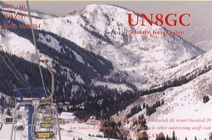

| 6m Today ! |

KH0/KH2K 50MHz EME DX-pedition
| 6m Today ! |

KH0/KH2K 50MHz EME DX-pedition
[Back Issues Jul.2005]
TIME:UTC(JST-09:00)
Report from JA1RJU (PM95sq)
31.Jul.2005(15:00c)
*BY-TV 00:00- 49.750 --
30.Jul.2005(15:00b)
*BY-TV 00:00- 49.750 --
Report from JA1RJU (QM06cb/PM95sq)
29.Jul.2005(15:00c)
*BY-TV 00:00- 49.750 --
Report from JA1RJU (QM06cb)
28.Jul.2005(15:00c)
*BY-TV 00:00- 49.750 --
27.Jul.2005(15:00d)
*BY-TV 00:00- 49.750 --
VR2SIX/B 04:30- 50.075 CW Beacon (Es JA4-6)
*9M-TV 06:30- 48.240/260 --
W1JJ 13:46 50.*** JT65A EME(FN41-QM06cb)
26.Jul.2005(15:00d)
*BY-TV 00:00- 49.750 --
*9M-TV 02:30- 48.240 --
DS1PDF 06:27 50.150 SSB
HL1JV 06:55 50.110 CW/SSB
W1JJ 14:05 50.*** JT65A EME(FN41-PM94)
Report from JA1RJU (PM95sq/QM06cb)
25.Jul.2005(22:00d)
*BY-TV 00:00- 49.750 --
K1SG 14:02 50.*** JT65A EME(FN42-QM06cb)
PF7M 21:40 50.*** JT65A EME(JO22-QM06cb)
24.Jul.2005(15:00c)
*BY-TV 00:00- 49.750 --
23.Jul.2005(23:00d)
*BY-TV 00:00- 49.750 --
*9M-TV 01:30- 48.240 --
HL2IPL 12:28 50.110 SSB
GD0TEP 22:18 50.*** JT65A EME(IO74-QM06ad)
22.Jul.2005(15:00c)
*BY-TV 08:00- 49.750 --
21.Jul.2005(15:00c)
*BY-TV 00:00- 49.750 --
HL50HYF 02:37 50.110 SSB
DS1MFC 03:41 50.110 SSB
20.Jul.2005(15:00c)
*BY-TV 00:00- 49.750 --
19.Jul.2005(15:00c)
*BY-TV 00:00- 49.750 --
*P5-AM 08:30- 48.250 AM audio
18.Jul.2005(15:00c)
*BY-TV 00:00- 49.750 --
HL1JV 05:49 50.105 CW
*P5-AM 08:00- 48.250 AM audio
17.Jul.2005(15:00c)
*BY-TV 00:00- 49.750 --
BD4XA 06:11 50.115 SSB
16.Jul.2005(15:00c)
*BY-TV 00:00- 49.750 --
(UN8GC 06:13 50.110 CW JA4)
15.Jul.2005(15:00c)
*9M-TV 00:00- 48.240 --
*BY-TV 00:00- 49.750 --
14.Jul.2005(15:00c)
*??-TV 00:00- 48.250 --
*BY-TV 00:00- 49.750 --
|
◎ 先日までの中東、ヨーロッパの入感がうその様に先週末からコンデションは落ち込んでしまった。 昨年は7月下旬までマルチホップの伝搬が良かったのでまだチャンスはありそう？。

 今シーズン入感のEsマルチホップの目玉となったZC4LIのQSL 右はアクティブにQRVしているUN8GC |
13.Jul.2005(15:00b)
*BY-TV 00:00- 49.750 --
12.Jul.2005(15:00d)
*9M-TV 03:00- 48.24/25/26--
*BY-TV 00:00- 49.750 --
VR2SIX/B 00:30- 50.075 CW Beacon
DU1EV/B 00:30- 50.008 CW Beacon
3W3A/XV3AA 00:50 50.145 SSB
VR2SIX/B 01:30- 50.075 CW Beacon
DU1EV/B 01:50- 50.008 CW Beacon
11.Jul.2005(15:00c)
*BY-TV 00:00- 49.750 --
09-10.Jul.2005(00:00a)
7/09-10日のFlash DX Reportはお休みします。
第22回VSG/第34回6SG Meeting (岩手県新安比温泉)
08.Jul.2005(15:00c)
*BY-TV 00:00- 49.750 --
HL1AEY 08:52 50.110 CW
07.Jul.2005(15:00d)
*BY-TV 00:00- 49.750 --
(IT9RZR 07:07 50.093 CW JA6)
IT9RZR 07:26 50.093 CW
A45XR 09:00 50.105 CW
A45XR 09:30 50.105 CW
06.Jul.2005(15:00d)
*BY-TV 00:00- 49.750 --
HL50HYF 01:40 50.110/120 SSB
*9M-TV 03:00- 48.24/25/26--
(5B4FL 06:24 50.097/110 CW JA5)
(5B4FL 06:59 50.105 CW JA6)
A45XR 12:33 50.105 CW
05.Jul.2005(15:00f)
*BY-TV 00:00- 49.750 --
*9M-TV 02:00- 48.260 --
NL7Z 04:14 50.110 CW
NL7Z 04:25 50.110 CW
KL7NO 05:40 50.105 CW
NL7Z 06:03 50.110 CW
NL7Z 06:20 50.110 CW
(5B4FL 06:26 50.110 CW JA2)
(IT9RZR 06:01 50.101 CW JA3)
--??-- 07:30- 48.250 -- QTF 310deg
(DK2PH 07:40 50.082 CW JA1.2)
IK0FTA 08:28 50.085.7 CW CQ/QRZ
*BY-TV 09:00- 49.750 --
(A45XR 12:10 50.110 CW JA7)
A45XR 13:03 50.110 CW
A61Q 13:03 50.102 CW
A45XR 13:38 50.097 CW
A61Q 13:41 50.102 SSB
A45XR 14:20 50.097 CW
04.Jul.2005(15:00c)
*BY-TV 00:00- 49.750 --
(IW0WTD 06:08 50.110 CW JA2)
(5B4FL 06:30 50.110 CW JA2-)
5B4FL 07:22 50.103 CW
5B8AD 07:33 50.101 CW (Alex:100W with 4el!)
Report from JA1RJU (QM06cb)
03.Jul.2005(15:00d)
*9M-TV 00:00- 48.24/25/26--
*BY-TV 00:00- 49.750 --
BU2AJ 00:30 50.115 SSB
VR2SIX/B 01:00- 50.075 CW Beacon (contest QRM)
BX2AB 01:29 50.110 CW CQ
BD9BA 01:36 50.105 CW CQ
BG7BJR 01:44 50.110/100 SSB
BX2AB 01:46 50.115 CW
UN8GC 03:43 50.110 CW
HL4CAE 05:25 50.100 CW
BD9BA 05:31 50.105 CW
02.Jul.2005(15:00e)
*BY-TV 00:00- 49.750 --
VR2SIX/B 01:30- 50.075 CW Beacon
HL50HYF 04:32 50.110 SSB CQ
DS2NFC 04:53 50.100 CW
NL7Z 05:05 50.105 CW strong! RST599 at peak.
NL7Z 05:46 50.105 CW F.out
NL7Z 06:11 50.105 CW CQ again !
KE7V 06:36 50.091 CW CQ
K6FV/B 06:36 50.069 CW Beacon
KR7O 06:41 50.095 CW
VE7DAY 06:44 50.100 CW
K6KLY 06:48 50.099 CW
VE7XF 06:48 50.092 CW
VE7DAY 06:54 50.095/100 CW
KL7NO 07:05 50.093 CW
NL7Z 07:53 50.105 CW
DS1PCF 09:02 50.105 CW
HL1AEY 09:22 50.110 CW
DS1PCF 09:22 50.110 CW
|
◎ 午後からKL7、VE7、W6/7など北米大陸がオープンした。
本格的な入感には今一つ信号は弱かったが、久しぶりに複数の北米西海岸からの入感で賑わった。
今日の最初の入感は05:05zのNL7Zで始まった。
この時のオープンでは北関東から東北に掛けて強力に入感していたが、
05:46zに一旦フェードアウトした。NL7Zはこの時点で16局のJAとQSOしたと。 06:10z頃から再びNL7Zが入感してきた時には、関東南部から2、3エリアなど西日本に強力で、 KL7がオープンしたエリアはJA6まで延びていた。 2度目のオープンからVE7、W6/W7など西海岸が同時に聞え始めたが、 オープンしているエリアはスポット的だった。 08:00z頃にNL7Zを最後に3時間に渡るオープンも終了したが、 NL7Zはこの日の一連のオープンで68局のJAとQSOした。 残念ながら期待された夕方からの西方向のオープンは無かった。 |
01.Jul.2005(15:00d)
*9M-TV 00:00- 48.240 --
*BY-TV 00:00- 49.750 --
*9M-TV 01:30- 48.240/260 --
VR2SIX/B 01:30- 50.075 CW Beacon
*BY-TV 03:00- 49.750 --
*9M-TV 03:00- 48.240/260 --
VR2XMT 03:00 50.110 SSB
HL50HYF 03:49 50.110/125 SSB CQ
VR2XMT 03:53 50.110 SSB
HL4GHT 06:49 50.110 SSB CQ
HL4CEL 08:36 50.110 CW CQ
*P5-AM 09:00- 48.250 AM P5(Radio)
|
◎ 今週は期待されていたヨーロッパや北米のEsマルチホップもいま一つパッとしなかった。 これにひきかえヨーロッパや北米ではこの夏のEsシーズンは連日のように賑わっている。 特にヨーロッパと中米・カリブ海付近とのパスはこの時期としては記録的にFBなオープンとなっている。 これは現在カリブ海に点在するエンティティーへのDX－Peditionが行われていてアクティビティーが上がってる事にも起因している。 ON4IQなどが参加しているJ3/K5AND (6/23-7/4)、N9RAのグループによるJ68AS (6/22-7/3)、 W6JKVによるV31IV (6/23-7/6)などが先週末から集中してQRVしている。 一部のグループは2m/6mでのEME運用も行われJAにもトライのチャンスが与えられている。 他にC6AIEやFM5JCなどがアクティブにQRVしてオープニングを盛り上げている。 昨夜(7/1=16:00z)はJ3/K5ANDがヨーロッパ中・北部までRST599でオープンして大騒ぎだった！。 10,000Km近いJ3－EU間の伝搬は単に"Esマルチホップ"の伝搬とは言えないと思われるが、 いずれにしても超DXとの伝搬が少ないJAとは違い、欧米では昨年の3B9C-JAの大オープンを彷彿とさせるコンディションが今年も"再現"されている。 |